All work
Fretbelly
A small creature that eats your worries, and shows you how few of them ever come true.
- Role
- Product and design, AI-assisted build
- Platform
- iOS, React Native and Expo
- Status
- On iPhone, in development
- Privacy
- No account, no tracking
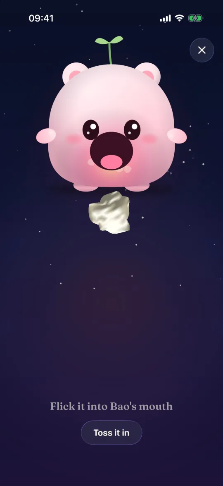

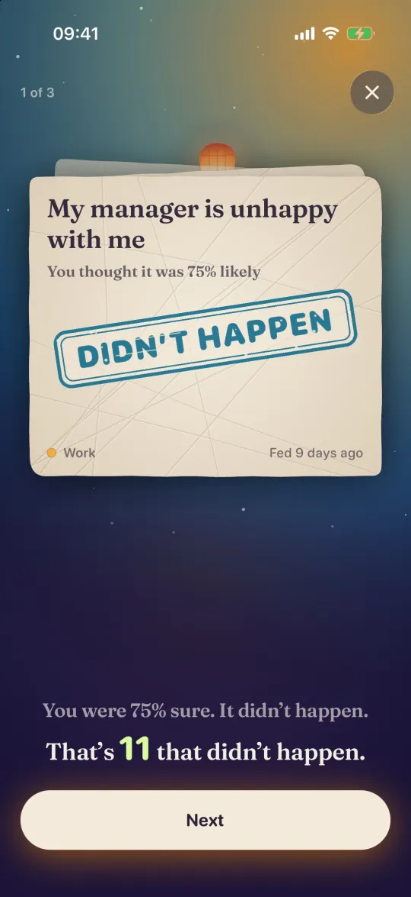
- Reviews read
- 30k+, popular personal apps
- Screens studied
- 300, from my Mobbin library
- Real reality check
- 0 of the apps studied
- Status
- Not on the App Store yet
What other worry apps miss
Other worry appsFretbelly
A character to hand worries toOnly comfort apps and worry gamesA small creature that eats them
Checks what really happenedNone of the apps I studiedAsks: did it happen?
What makes it growStreaks, or nothingYour answers, never streaks
How it works
01Put it downWrite it, crumple it, toss it in.
02Worry laterOne worry time a day. The jar stays sealed.
03Check realityDid it happen? If not, a lantern.
04See the truthLike 17 eaten, 2 came true.
Fretbelly in action
A real screen recording from the iPhone simulator. Tap a step to replay it.
Feeding a worry
Home counts every worry it has eaten.
What I cut and why
Things I planned, then took out, and what replaced them.
The name Worry EaterCutA brand already owns WORRY EATERS as a trademark.NowFretbelly.
StreaksCutIt rewards opening the app, not checking what really happened.NowIt grows from answers to Did it happen?
Rereading any timeCutRereading a worry feeds it.NowThe jar stays sealed until your worry time.
Screens
Pick a part of the app.
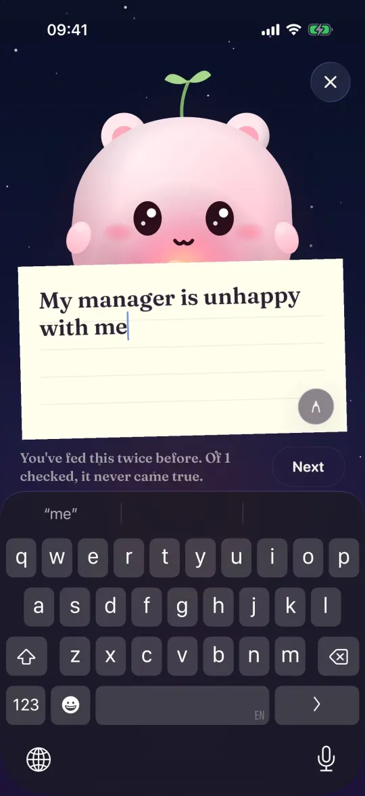
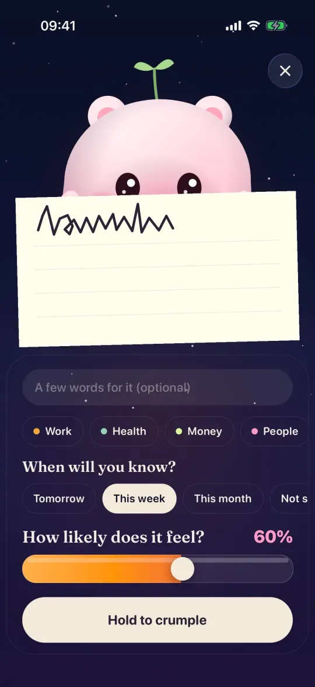
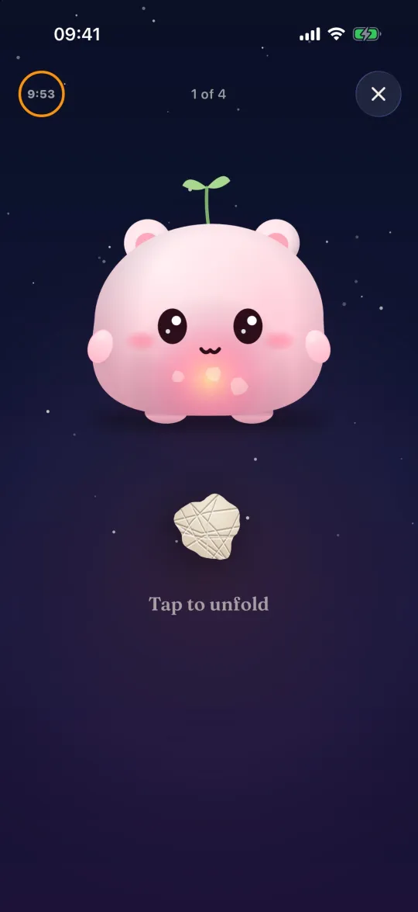
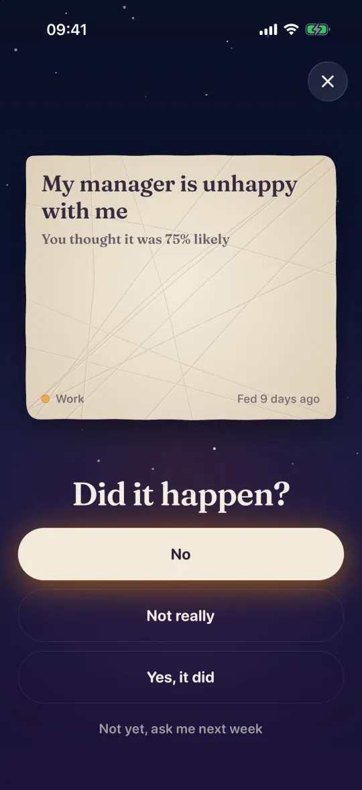
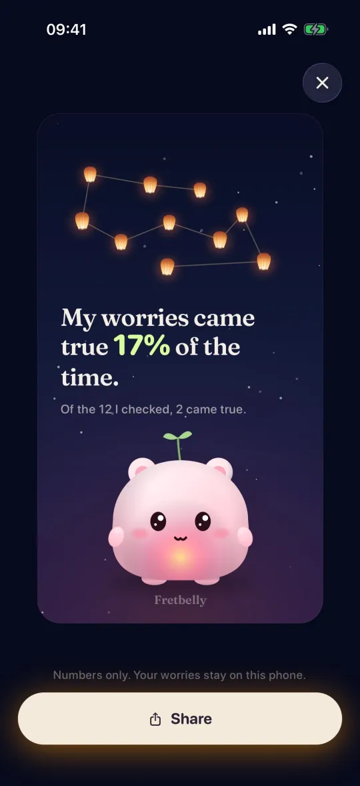
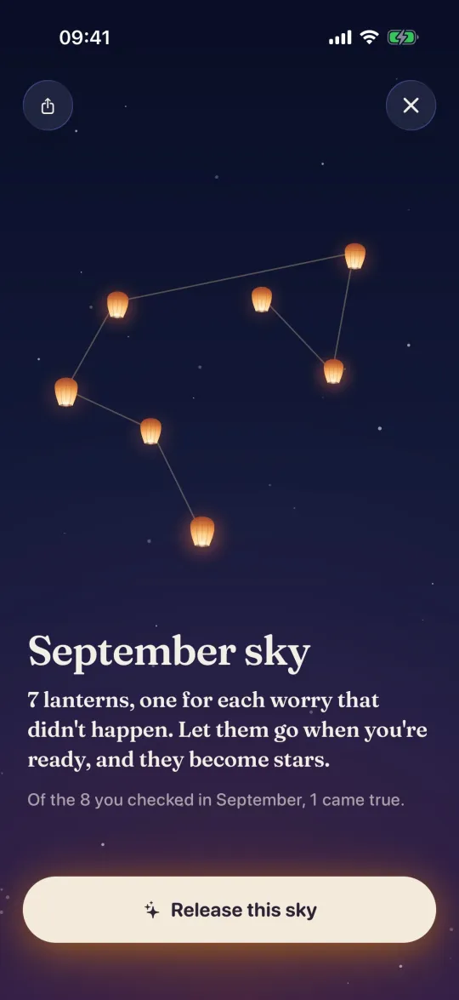
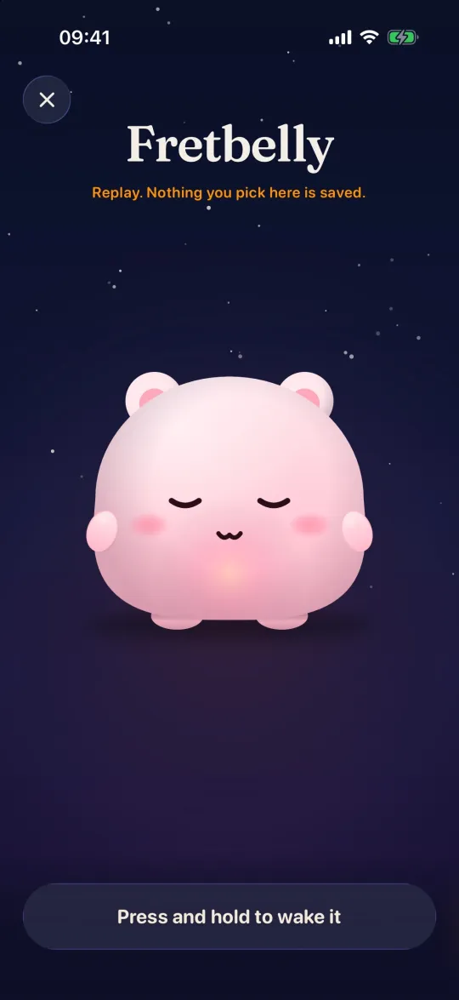
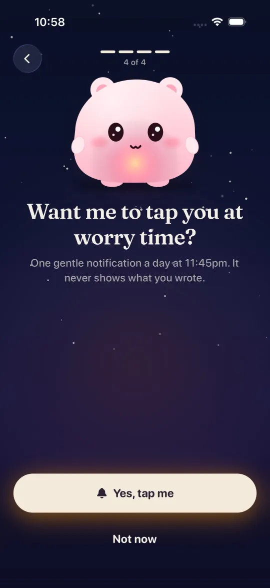
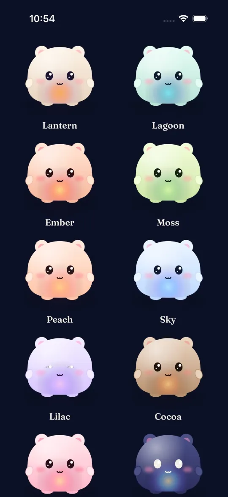
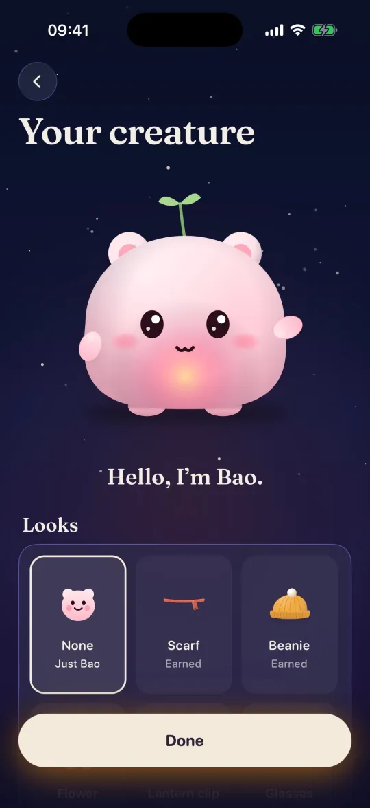
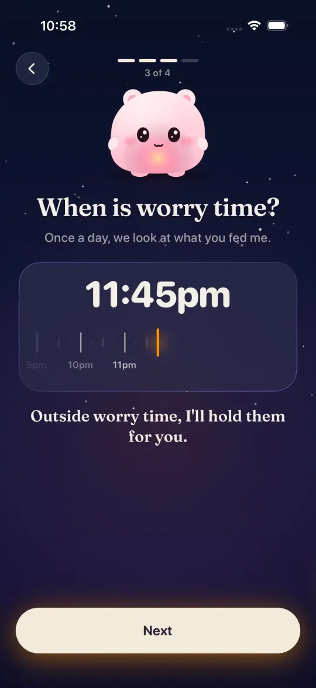
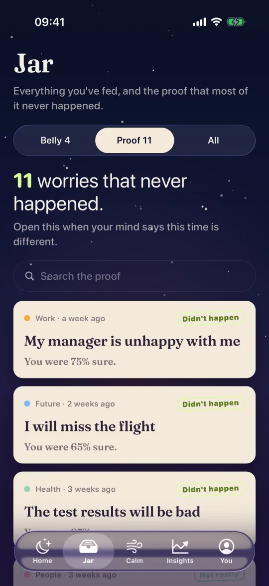
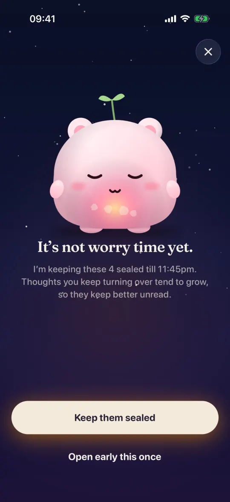
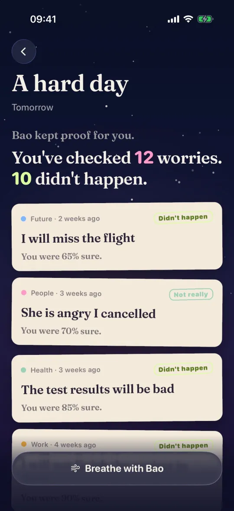
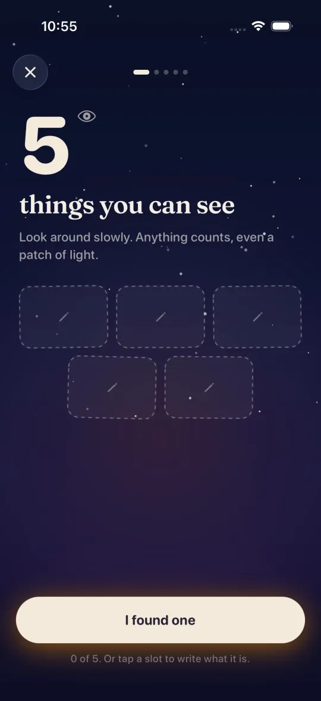
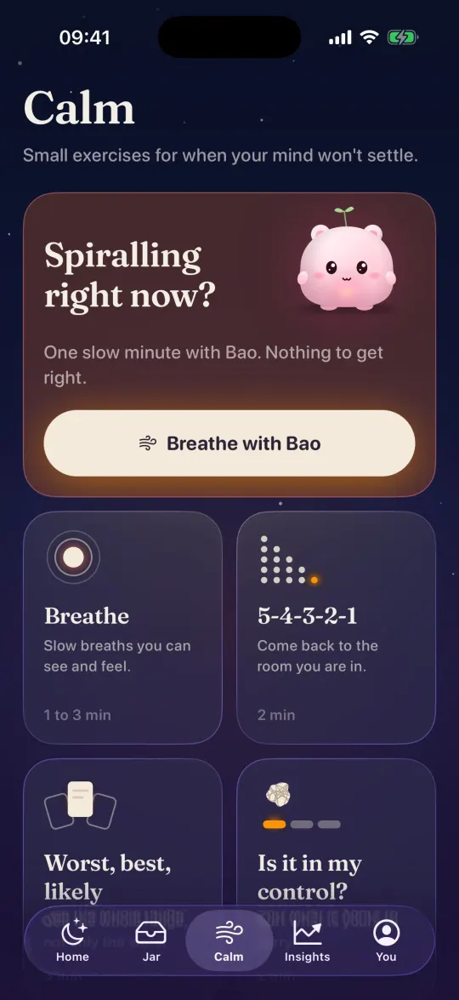
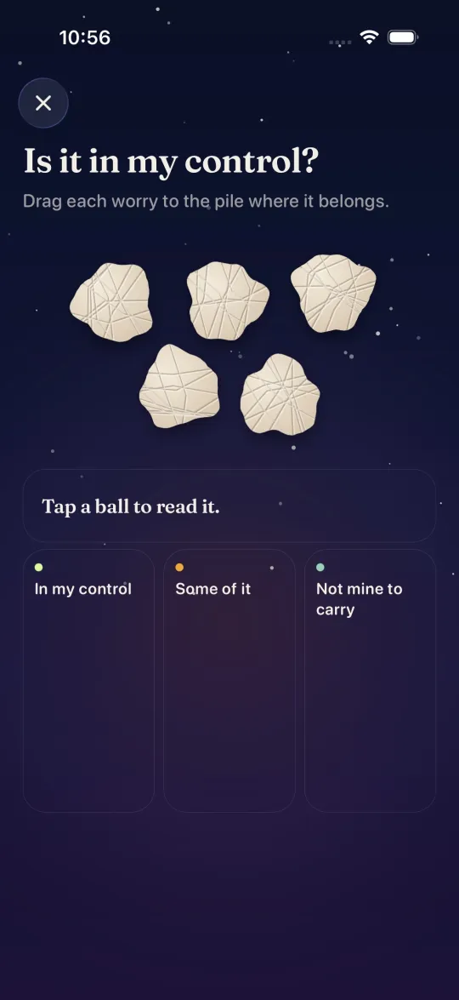